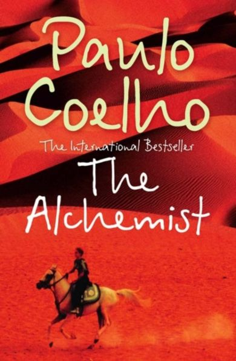

-
The 5 AM Club: By Robin Sharma information:
Legendary leadership and elite performance expert Robin Sharma introduced The 5am Club concept over twenty years ago, based on a revolutionary morning routine that has helped his clients maximize their productivity, activate their best health and bulletproof their serenity in this age of overwhelming complexity
Rules: The 5am club strategy asks you to get out of bed at 5am six till seven times per week. The first action you then execute is sports. Robin suggests running or going to the gym for 20 minutes. In a second step you invest 20 minutes in your education.
-
The Alchemist: Novel by Paulo Coelho  The Alchemist is a novel by Brazilian author Paulo Coelho which was first published in 1988. Originally written in Portuguese, it became a widely translated international bestseller
Lessons: The constant theme in The Alchemist is to pursue your dreams by following what your heart desires. During the young boy's journey, he learns to listen to the heart and to follow the language of omens. With each passing obstacle and hurdle that the young boy encounters, there is a lesson to learn.
Setting: Setting (place) The main plot of the alchemist takes place in the Spanish pastures, the Spanish town of Tarifa, the city of Tangier in North Africa, and the Sahara desert. ProtagonistThe novel's protagonist is Santiago, an Andalusian shepherd.
-
The Forty Rules of Love: Novel by Elif Shafak The Forty Rules of Love is a novel written by the Turkish author Elif Shafak, The book was published in March 2009. It is about Maulana Jalal-Ud-Din, known as Rumi and his companion Shams Tabrizi. This book explains how Shams transformed a scholar into a Sufi through love
-
Steve Jobs: by Walter Isaacson Steve Jobs is the authorized self-titled biography of American business magnate and Apple co-founder Steve Jobs. The book was written at the request of Jobs by Walter Isaacson, a former executive at CNN and TIME who has written best-selling biographies of Benjamin Franklin and Albert Einstein.